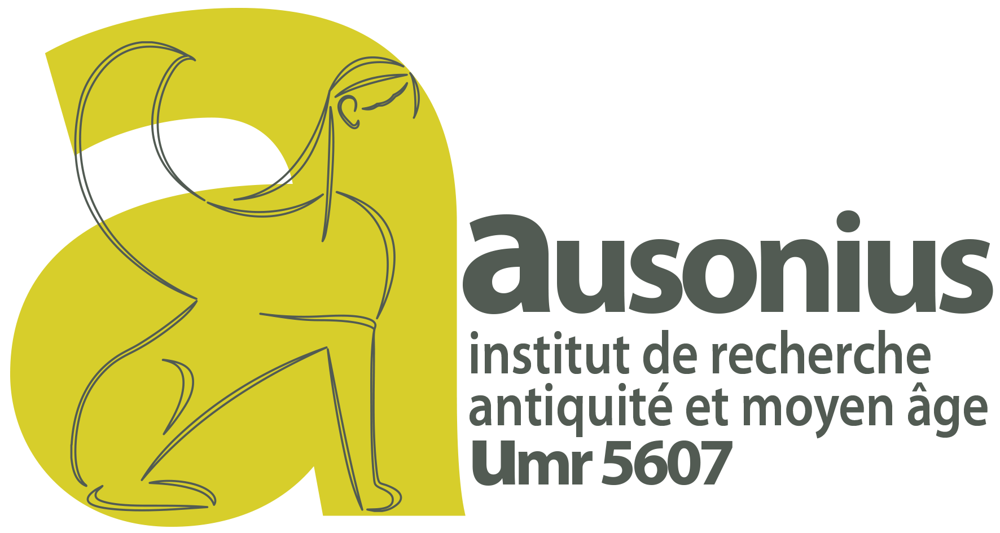

 SEUWIN GAUTHIER : BIBLIOGRAPHIE
Sujet de mémoire : Ornements et signes distinctifs dans l'armée romaine. fin IIIe siècle av. J.-C. - fin Ier siècle av. J.-C.
ABRANSON, E., Roman Legionaries at the Time of Julius Caesar, Londres, 1979.
AIGNER, H., Die Soldaten als Machtfaktor in der ausgehenden römischen Republik, Innsbruck, 1974.
ANCIEN, A.-M., « Le casque gaulois de Variscourt (Aisne) », Bull. SPF, 78 (1981), p. 60-64.
ANDERSON, A.S., Roman Military Tombstones, Princes Risborough, Bucks, 1983.
ARMAND-CALLIAT, L. « Un casque antique en bronze au musée de Chalon-sur-Saône », Gallia; 23 (1965), p. 261-266.
AURRECOECHA, J., « Roman military equipment in Spain », dans A. Morillo Cerdan et J. Aurrecoecha (éd.), The Roman Army in Hispania. An Archaeological Guide, León, 2006, p. 167-179.
BALIL, A., « De la cultura romano-iberica a la escultura romana-republicana » dans J. González (éd.), Estudios sobre Urso. Colonia Iulia Genetiva, Sevilla, 1989, p. 223-231.
BARONOWSKI, D. W., « Roman Military Forces in 225 B.C. (Polybius 2.23-4) », Historia: Zeitschrift Für Alte Geschichte, 42 (2) (1993), p. 181-202.
BARRUOL, G. et SAUZADE, G., « Une tombe de guerrier à Saint-Laurent-des-Arbres, Gard, contribution à l'étude des sépultures du Ier s. av. J.-C. dans la basse Vallée du Rhône », RSL, 35 (1969), p. 15-89.
BENOIT, F., « Casque nord-italique de Saint-Laurent-des-Arbres », dans Hommages à Marcel Renard, III, Latomus, 103 (1969), p. 13-18.
BERROCAL-RANGEL, L., « A propos des peuples, des armes et des sites pendant les Guerres Lusitaniennes: une vision d’ensemble », JRMES, 8 (1997), p. 123-136.
BISHOP, M.C., Roman military equipment: Proceedings of a seminar held in the Department of Ancient History and Classical Archaeology at the University of Sheffield, 21st March 1983, Sheffield, 1983.
BISHOP, M.C., « The military fabrica and the production of arms in the early Principate », dans M.C. Bishop (éd.), The Production and Distribution of Roman Military Equipment: Proceedings of the Second Roman Military Equipment Research Seminar BAR, S-275, (1985), p. 1-42.
BISHOP, M.C., « Legio V Alaudae and the crested lark », JRMES, 1 (1990), p. 161-164.
BISHOP, M.C., « On Parade: Status, Display and Morale in the Roman Army », dans H. Vetters et M. Kandler, (éd), Der römische Limes in Österreich, 36: Akten des 14. Internationalen Limeskongresses 1986 in Carnuntum, Vienna, 1990, p. 21-30.
BISHOP, M.C., « The Early Imperial ‘Apron’ », JRMES, 3 (1992), p. 81–104.
BISHOP, M.C. et COULSTON, J.C.N., Roman military equipment from the Punic Wars to the fall of Rome, Londres, 2006.
BROQUIER-REDDÉ, V., « L’équipement militaire d’Alésia d’après les nouvelles recherches (prospections et fouilles) », JRMES, 8 (1997), p. 277-288.
BUCKLAND, P., « A first-century shield from Doncaster, Yorkshire », Britannia, 9 (1978), p. 247-269.
BURANDT, B.A.N., « Embossed or painted? A new study on Roman shield decoration », JRMES, 18 (2017), p.111-116.
BURNS, M.T., « The homogenisation of military equipment under the Roman Republic », Digressus, Supplement 1 (2003), p. 60–85.
CADIOU, F., Hibera in Terra Miles, Les Armées romaines et la conquête de l'hispanie sous la république (218-45 av. J.-C.), Madrid, 2008.
CADIOU, F. et NAVARRO CABALLERO, M., (éd.) La guerre et ses traces, Conflits et sociétés en Hispanie à l'époque de la conquête romaine (IIIe-Ier s. a.C.), Bordeaux, 2014.
COARELLI, F., « Su un monumento funerario romano nell’abbazia di San Gulielmo al Goleto », Dialoghi di Archeologia, 1 (1967), p. 46–71.
COARELLI, F., « ‘L'Ara di Domizion Enobarbo’ e la cultura artistica in Roma nel II secolo a.C », Dialoghi di Archeologia, 2 (1968), p. 302-368.
CONNOLLY, P., « The Roman army in the age of Polybius » dans J. Hackett (éd.), Warfare in the Ancient World. Londres, 1989, p. 149–68.
CONNOLLY, P., « Pilum, gladius and pugio in the Late Republic », JRMES, 8 (1997), p. 41–57.
CONNOLLY, P., « The reconstruction and use of the roman weaponry in the second century BC », JRMES, 11 (2000), p. 43–46.
CONNOLLY, P., « The pilum from Marius to Nero – a reconsideration of its development and function », JRMES, 12/13 (2001/2), p. 1–8.
COSME, P., L’armée romaine, VIIIe s. av. J.-C.-Ve s. ap. J.-C., Paris, 2007, rééd. 2021.
COUISSIN, P., Les armes romaines. Essai sur les origines et l'évolution des armes individuelles du légionnaire romain, Paris, 1926.
COULSTON, J.C.N., (éd.) Military Equipment and the Identity of Roman Soldiers, Proceedings of the Fourth Roman Military Equipment Conference, BAR, 394, Oxford 1988.
COULSTON, J.C.N., « Armed and belted men: the soldiery in imperial Rome », dans J. Coulston, et H. Dodge (éd.), Ancient Rome: the Archaeology of the Eternal City, Oxford, p. 76-118.
COWAN, R., Roman Legionary, 58 BC-AD 69, Warrior, 72, Londres, 2003.
CRAWFORD, M., Roman Republican Coinage, Cambridge, 1974.
CUBAYNES, R., Les hommes de la VIIIe légion Auguste, Autun, 2018.
D'AMATO, R. et SUMNER, G., Arms and armour of the Imperial Roman Soldier : From Marius to Commodus, 112 BC-AD 192, Londres, 2009.
DAWSON, M., (éd.), Roman Military Equipment. The Accoutrements of War, Proceedings of the Third Roman Military Equipment Research Seminar, BAR, 336, Oxford, 1987.
DOBSON, M., The army of the roman republic: The second century BC, Polybius and the camps at Numantia, Spain, Oxford, 2008.
DUVAL, A., « Les armes d'Alésia au Musée des Antiquités Nationales », Rev. Hist. des Armées, 2, (1987), p. 56-62.
ERDKAMP, P., (éd.), A Companion to the Roman Army, Blackwell Companions to the Ancient World, Oxford, 2007.
ESPÉRANDIEU, E., Recueil général des bas-reliefs, statues et bustes de la Gaule romaine, I, Paris, 1907.
FERDIÈRE, A. et VILLARD, A., La tombe augustéenne de Fléré-la-Rivière (Indre) et les sépultures aristocratiques de la cité des Bituriges. En Berry au début de l'époque gallo-romaine : le fer, le vin, le pouvoir et la mort, Tours, 1993.
FEUGERE, M., « Les armes romaines » dans L. Bonnamour (éd.), Du silex à la poudre. 4000 ans d’armement en val de Saône, Montagnac, 1990.
FEUGERE, M., Les armes des romains de la République à l’antiquité tardive, Paris, 1993.
FEUGERE, M., Casques antiques, Les visages de la guerre de Mycènes à l'Antiquité tardive, Paris, 1994.
FEUGERE, M., « L'équipement militaire d'époque républicaine en Gaule », JRMES, 5 (1994), p. 3-23.
FEUGERE, M., « Le légionnaire de Jules César » dans : Vercingétorix et Alésia, Cat. expo. St.-Germain-en-Laye, 1994, p. 187-188.
FEUGERE, M., (éd) L'équipement militaire et l'armement de la République (IVe-Ier siècle av. J.-C.), Proceedings of the Tenth Roman Military Conference (Montpellier, Septembre 1996), JRMES, 8 (1997), Oxford, 1997.
FEUGERE, M., Weapons of the Romans, Londres, 2002.
FILLOY NIEVA, I. et GIL ZUBILLAGA, E., « Las armas de las necrópolis celtibéricas de Carasta y la Hoya (Alava, España). Tipología de sus puñales y prototipos del pugio », JRMES, 8 (1997), 137-150.
GABBA, E. et CUFF, P.J., Republican Rome: The Army and the Allies, Oxord, 1976.
GALINIER, M., « La représentation iconographique du légionnaire romain » dans Y. Le Bohec (éd), Les légions de Rome sous le Haut-Empire. Acte du congrès (Lyon, 17-19 septembre 1998), Lyon, 2000, p. 418-421.
GARCIA Y BELLIDO, A., « Esculturas hispano-romanas de época republicana », Mélanges d'Archéologie, d'Épigraphie et d'Histoire offerts à Jérôme Carcopino, Paris, 1966.
GARCIA-MAURINO, J., « Los cascos de tipo montefortino en la Peninsula Iberica. Aportacion al estudio del armamento en la IIa Edad del Hierro » in Complutum, 4, 1993, 95-146.
GILBERT, F., Le soldat romain à la fin de la République et sous le Haut-Empire, Paris, 2012.
GILLIVER, C.M., The Roman Art of War, Stroud, 1999.
GILLIVER, C.M., « Display in Roman Warfare : The Appearance of Armies and Individuals on the Battlefield », War in History, 14, p. 1‑21.
GOLDSWORTHY, A.K., The Roman Army at War, 100 BC-AD 200, Oxford, 1996.
GOLDSWORTHY, A.K., The Complete Roman Army, Londres, 2003.
GOLDSWORTHY, A.K et HAYNES, I., (éd.) The Roman Army as a Community, (JRA suppl. 34), Londres, 1999.
HARMAND, J., L’Armée et le Soldat à Rome de 107 à 50 avant notre ère. Paris, 1967.
HORVAT, J., « Roman Republican weapons from Smihel in Slovenia », JRMES, 8 (1997), p. 105-120.
IRIARTE, A., GII, E., FILLOV, I. et GARCIA, M.L., « A votive deposit of Republican weapons at Gracurris (Alfaro, La Rioja, Spain) », JRMES, 8 (1997), p. 233-250.
ISTENIC, J., « A late-republican gladius from the River Ljubljanica (Slovenia) », JRMES, 9 (2000), p. 1-9.
KEEGAN, J., The Face of Battle, Londres, 1976.
KEPPIE, L., « Military service in the late republic: the evidence of inscriptions and sculpture », JRMES, 8 (1997), p. 3-11.
KEPPIE, L., The Making of the Roman Army: From Republic to Empire, Norman, 1984 réed. 1998.
KIMMIG, W., « Ein Keltenschild aus Ägypten », Germania, 24, (1940), p. 106-110.
KLEIN, M.J., « Roman Decorated Daggers and Figural Sword Fittings from Mainz-Mogontiacum (Germania Superior) », JRMES, 16 (2008), p.237-248.
KÜNZL, E., « Les armes ornées en bronze », Doss. Arch., 28 (1978), p. 90-98.
KÜNZL, E., « Dekorierte Gladii und Cingula: Eine ikonographische Statistik », JRMES, 5 (1994), p. 33-58.
LE BOHEC, Y., « L'armement des Romains pendant les Guerres Puniques d'après les sources littéraires », JRMES, 8 (1997), p. 13-24.
LE BOHEC, Y., (éd.) The encyclopedia of the Roman Army, Chichester, 2015.
LENDON, E., Soldiers and Ghosts: A History of Battle in Classical Antiquity, New York, 2005.
LEON ALONSO, P., « Plastica ibérica e iberorromana » dans La baja época de la cultura ibérica. Actas de la mesa redonda (Madrid 23-24 de marzo de 1979), Madrid, Asociacion Espanola de Amigos de la Arqueologia, 1981, p. 183-199.
LETTA, C., « Un militare decorato », dans E. Andress, C. Letta, M. Paoletti (éd), Amplero : archeologia e storia di un centro italico-romao: 20 anni di ricerche, Collelongo, p. 53-54.
MACMULLEN, R., « Inscriptions on Armor and the Supply of Arms in the Roman Empire », American Journal of Archaeology, LXIV (1960), p. 23–40.
MAXFIELD, V.A., The military decorations of the Roman army, Londres, 1981.
NICOLET, C., Le métier de citoyen dans la Rome républicaine, Paris,1976.
OLDENSTEIN, J., « Les armes des soldats romains », Doss. Arch.., 86 (1984), p. 35-49.
PADDOCK, J., The bronze Italian helmet : the development of the Cassis from the last quarter of the sixth century B.C. to the third quarter of the first century A.D., Londres, 1993.
QUESADA SANZ, F., El armamento ibérico. Estudio tipológico, geográfico, funcional, social y simbólico de las armas en la Cultura Ibérica (siglos VI-I a.C.), Montagnac, 1997.
QUESADA SANZ, F., « Montefortino-type and related helmets in the Iberian Peninsula: a study in archaeological contex », JRMES, 8 (1997), p. 151-166.
QUESADA SANZ, F., « Gladius hispaniensis: an archaeological view from Iberia », JRMES, 8 (1997), p. 251-270.
QUICHERAT, J., « Examen des armes trouvées à Alise », Rev. Arch., I (1865), p. 81-99.
RAWSON, E., « The literary sources for the pre-Marian army » PBSR 39 (1971), p. 13–31.
REDDÉ, M., « Les ouvrages militaires romains en Gaule sous le Haut-Empire. Vers un bilan des recherches récentes »,. RGZM 34 (1987), p. 343-368.
REDDÉ, M., (éd.) Fouilles et recherches nouvelles sur les travaux de César devant Alésia (1991-1994), Mayence, 1995.
REINACH, A.J., « Signa Militaria » dans C.V. Daremberg et E. Saglio, Dictionnaire des Antiquités, IV. 2, p. 1307–1325.
ROBINSON, R., The armour of Imperial Rome, Londres, 1975.
RODRIGUEZ OLIVA, P., « Las primeras manifestaciones de la escultura romana en la Hispania meridional » dans J. Masso et P. Sada (éd.), Actas de la II Reunion sobre Escultura Romania en Hispania (Tarragona, 30-31 de marzo - I de abril de 1995), Tarragone, 1996, p. 13-30.
ROMANELLI, P., Palestrina, Naples, 1967.
ROST, A. et WILBERS-ROST, S., « Weapons at the battlefield of Kalkriese », dans (éd.) F. Quesada Sanz, M. Navarro Caballero et F. Cadiou, De armas, de hombres y de dioses. El papel de las armas en la Conquista romana de la Península Ibérica, 2010, p. 117-136.
SABIN, P., « The face of Roman battle » JRS, 90 (2000),p. 1–17.
SEKUNDA, N. et MCBRIDE, A., Republican Roman Army 200–104 BC, Londres, 1996.
SIEVERS, S., « Les armes d’Alésia » dans : Vercingétorix et Alésia, Cat. expo. St.-Germain-en-Laye, 1994, p. 270-287.
SIEVERS, S., « Alesia und Osuna: Bemerkungen zur Normierung der spätrepublikanischen Bewaffnung und Ausrüstung », JRMES, 8 (1997), p. 271-276.
SMITH, R.E., Service in the post-Marian Roman Army, Manchester, 1958.
SPEIDEL, M.A., « Roman army pay scales » JRS 82 (1992), p. 87–106.
STARY, P.F., Zur eisenzeitlichen Bewaffnung und Kampfweise in Mittelitalien, Mayence, 1981.
STOLL, O., « De honore certabant et dignitate. Truppe und Selbstidentifikation in der Armee der römischen Kaiserzeit », MAVORS XIII (2001), p. 106-136.
SUMNER, G., The military clothing, 100 BC-AD 200, Londres, 2003.
SUMNER, G.V., « The legion and the centuriate organization » JRS, 60 (1970), p. 67–78.
TANSEY, P., « M. Titius, Menas and the insignia scutorum », Klio, 90 (2008), p. 62-75.
VAN DRIEL-MURRAY, C., (éd.) Roman Military Equipment : the Sources of Evidence, Proceedings of the Fifth Roman Military Equipment Conference, BAR S-336, Oxford, 1989.
VON DOMASZWESKI, A., Die Fahnen im römischen Heere, Vienne, 1885.
VON DOMASZWESKI, A., « Die Thierbilder der signa », Archaeologisch-Epigraphische Mittheilungen aus Oesterreich-Ungarn, 15 (1892), p. 182–93.
VON DOMASZWESKI, A., Die Rangordnung des röm. Heeres, 1908 (2ème édition revue par B. Dobson, Cologne, 1967.
WARRY, J., Warfare in the Classical World, Londres, 1980.
WATSON, G.R., The Roman Soldier, Cornell, 1969, réed. 1985.
YÉBENES, P., « Inscripción sobre el umbo del scutum de un jinete del ala Parthorum en Herrera de Pisuerga », Hispania Antiqua, 25 (2001), p. 199-209.
ZHMODIKOV, A., « Roman Republican Heavy Infantrymen in Battle (IV–II Centuries BC) », Historia, 79 (2000), p. 67-78.